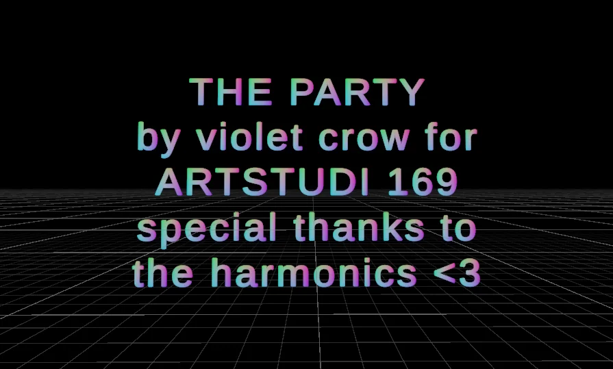
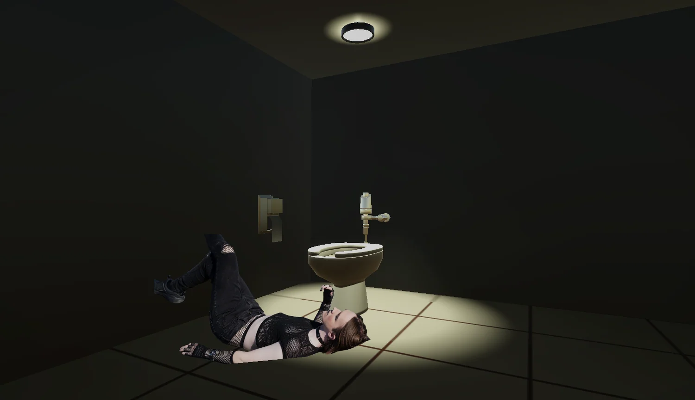
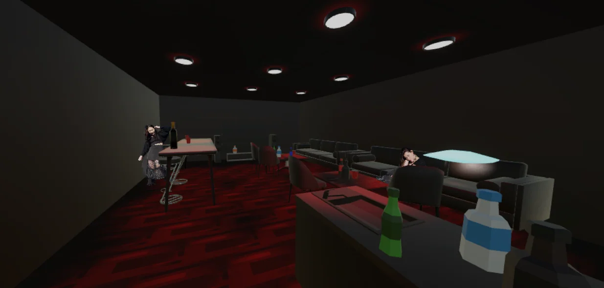

The Party
A narrative VR piece about the social and psychological consequences of alcohol abuse, set in the place my a cappella group held our afterparties at Stanford.

Altered perception
In The Party, you experience a college afterparty from the perspective of a group member. You arrive at a reconstruction of our usual party room; our playlist even blares from the TV as it always does. You can talk with the other members of the group, some of whom have clearly already been drinking. You can walk around, check the fridge, or even choose to drink yourself from the cup permanently attached to your right hand. With each drink, your vision and hearing will become more distorted. Be careful not to drink too much, though, or else you might black out.

The turning point of the evening is when your friend (voiced by me) approaches you and asks for a chaperone to the bathroom. You watch as they hit the floor, incredibly sick.

When you leave the bathroom to get help, the room you just left is washed in red light. What was a jovial, familiar atmosphere just a moment ago is now undeniably hostile, oppressive. I wanted that return to capture the nausea of being at a party where the mood has shifted and the night has clearly gone on too long.

A pillow glowing in the room will take you to my dorm the next morning, where you can find an empty bottle left over from the last night's events. After a moment of reflection, you can throw it away to end the experience.

Building a place from memory
I designed the playable environments in Unity, basing the dorm on the room I lived in at the time. I modeled some props myself and used publicly available models for others. I scripted the interactions and character paths, made custom shaders, placed the spatial audio, and designed the lighting.
The drinking mechanic allowed me to give the player some amount of agency over how the night goes while still delivering a linear narrative experience. An advantage of Virtual Reality is that your actions can have consequences not only for your character but also for you; the blurry and nauseating vision your character experiences when drinking too much will impact your actual perception. The transition when stepping into and out of the bathroom allows you to feel how the mood can change even in one room.
Creative process
At first my goal was simply to recreate the environment and atmosphere of a party I had been to often. The rounds of feedback from peers who playtested during the quarter pushed me to develop the experience further, and make it more meaningful. I based the experience in three real memories: worrying about a friend who was sick; feeling tensions rise as a night went on; and sitting quietly to reflect the next morning.
I view The Party as an early exploration into the use of narrative VR in psychological research. How does feeling physically present in a virtual scene change someone's understanding of an emotional experience, and how does that impact their behavior afterward?